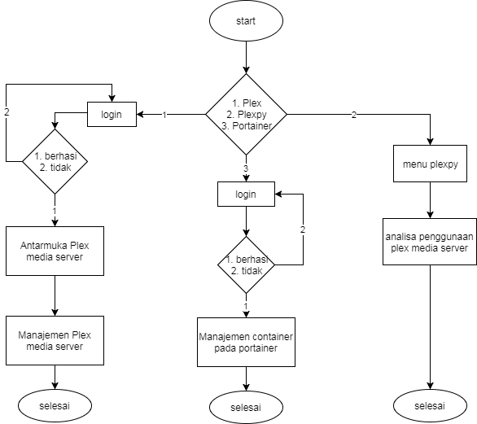
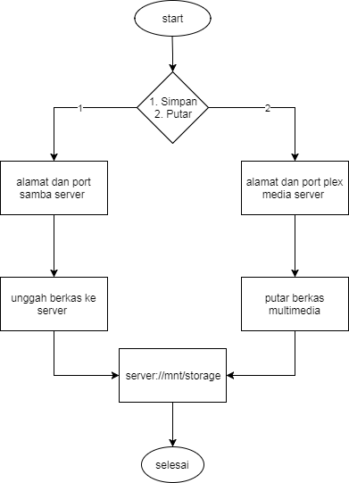

<!doctype html>
<html lang="en">

	<head>
		<meta charset="utf-8">

		<title>Wahyu Presentasi Skripsi</title>

		<meta name="description" content="A framework for easily creating beautiful presentations using HTML">
		<meta name="author" content="Hakim El Hattab">

		<meta name="apple-mobile-web-app-capable" content="yes" />
		<meta name="apple-mobile-web-app-status-bar-style" content="black-translucent" />

		<meta name="viewport" content="width=device-width, initial-scale=1.0, maximum-scale=1.0, user-scalable=no">

		<link rel="stylesheet" href="reveal.js/css/reveal.css">
		<link rel="stylesheet" href="reveal.js/css/theme/sky.css" id="theme">

		<!-- For syntax highlighting -->
		<link rel="stylesheet" href="reveal.js/lib/css/zenburn.css">

		<!-- If the query includes 'print-pdf', use the PDF print sheet -->
		<script>
			document.write( '<link rel="stylesheet" href="reveal.js/css/print/' + ( window.location.search.match( /print-pdf/gi ) ? 'pdf' : 'paper' ) + '.css" type="text/css" media="print">' );
		</script>

		<!--[if lt IE 9]>
		<script src="reveal.js/lib/js/html5shiv.js"></script>
		<![endif]-->
	</head>

	<body>

		<div class="reveal">

            <div class="slides">

                
<section data-markdown data-separator="^\n---\n$" data-separator-vertical="^\n--\n$" data-notes="^Note:">
<script type="text/template">
<!-- .slide: data-background="white" -->
## Rancang Bangun Media Server Cloud Computing Menggunakan Plex Pada Docker Container  <br /> <br/>

#### Nama : Wahyu Tri Nugroho 

####  nim  : 165410144

#### Teknik Informatika / S1


</script>
</section>

<section data-markdown data-separator="^\n---\n$" data-separator-vertical="^\n--\n$" data-notes="^Note:">
<script type="text/template">


 ### Latar Belakang

Yang melatar belakangi pembuatan karya ilmiah ini adalah : <br/> <br/>

<div style="text-align: left"> 1 Meningkatnya pengguna komputer dan _device smartphone_ untuk kebutuhan multimedia kian meningkat, seperti penggunaan smartphone untuk menyimpan rekaman video dan audio</div>
<br/ > <br />
<div style="text-align: left"> 2 Sedangkan ukuran video dan audio relatif cukup besar dibandingkan dengan kapasitas penyimpanan device smartphone yang relatif kecil </div>

</script>
</section>

<section data-markdown data-separator="^\n---\n$" data-separator-vertical="^\n--\n$" data-notes="^Note:">
<script type="text/template">

* Untuk mengatasi measalah tesebut maka dibutukan sebuah server terpusat yang dapat digunakan pengguna untuk menyimpan dan memutar berkas multimedia, sehingga penyimpanaan lokal pada _device_ pengguna dapat digunaan untuk menyimpan hal - hal yang lebih penting. <br  /> <br />
* Server tentu saja harus memiliki kemampuan untuk dapat diakses dari mana saja oleh pengguna, untuk menyesuaikan kebutuhan pengguna _device smartphone_ yang cenderung _mobile_


</script>
</section>

<section data-markdown data-separator="^\n---\n$" data-separator-vertical="^\n--\n$" data-notes="^Note:">
<script type="text/template">
##  Rumusan Masalah

<div style="text-align: left"> Berdasarkan latar belakang masalah yang telah diketahui, maka dapat dirumuskan masalah tersebut dengan : </div>
<br/> <br/ > 
<div style="text-align: left"> 1. Bagaimana mengahasilakn layanan media server berbasis cloud computing yang dapat diakases oleh pengguna komputer maupun _device smartphone_ </div>
<br/><br/>
<div style="text-align: left"> 2. Bagaimana menghasilkan server penyimpanan yang dapat ditambah kasistas penyimpanannya tanpa harus ada downtime (_scalable_) </div>

</script>
</section>

<section data-markdown data-separator="^\n---\n$" data-separator-vertical="^\n--\n$" data-notes="^Note:">
<script type="text/template">
### Ruang Lingkup

<div style="text-align: left">Adapun batasan pembahasaan atau ruang lingkup dalam karya ilmiah ini antara lain  :
</div>

   <small>

   <div style="text-align: left">

  1. Menggunakan aplikasi plex media server sebagai manajemen media pada server dan player pada klien 

  2. Jenis media yang dapat diputar berupa 

    * Audio --> AAC, ALAC, FLAC, MP3, M4A, WAV  <br/>
    * Video --> MKV, MP4, MOV, FLV, 3gp 

  3. Bersifat _scalable_ yang berarti dapat ditambah kapasitas penyimpanannya menggunakan _mergerfs_
  4. _Synchronize_ karena berpusat pada satu server sehingga klien A dan B akan memiliki berkas yang sama
  5. Diimplementasikan menggunakan docker container
  1. Berbasis web
 
 </div>
 </small>
</script>
</section>

<section data-markdown data-separator="^\n---\n$" data-separator-vertical="^\n--\n$" data-notes="^Note:">
<script type="text/template">
## Tujuan

<div style="text-align: left"> Penelitian ini bertujuan untuk : </div> <br /> 

<div style="text-align: left"> 
 1. Membangun media server berbasis cloud computing yang dapat diakses melalui jaringan nirkabel
<br/> <br/>
 2. Mengimplementasikan plex media server ke dalam docker container agar server dapat lebih fleksible dalam hal penambahan service ( _microservices_ ) sehingga dapat memenuhi kebutuhan klien yang cenderung meningkat
</div>
</script>
</section>

<section data-markdown data-separator="^\n---\n$" data-separator-vertical="^\n--\n$" data-notes="^Note:">
<script type="text/template">
## Manfaat Penelitian
<div style="text-align: left"> 
Penelitian ini diharapkan dapat bermanfaat bagi pengguna dalam beberapa hal, antara lain : 
<br/> <br/>
  1. Terciptanya aplikasi yang dapat membantu dan mempermudah pengguna dalam mengelola berkas multimedia yang berbasis _Cloud Computing_
  <br/> <br/>
  2. Memberikan layanan server multimedia dimana klien juga dapat ber kontribusi dalam menambah koleksi multimedia di server melalui samba
</div>
</script>
</section>

<section data-markdown data-separator="^\n---\n$" data-separator-vertical="^\n--\n$" data-notes="^Note:">
<script type="text/template">
### Rancangan Flowchart Admin



   
</script>
</section>

<section data-markdown data-separator="^\n---\n$" data-separator-vertical="^\n--\n$" data-notes="^Note:">
<script type="text/template">
### Rancangan Flowchart Klien


</script>
</section>

<section data-markdown data-separator="^\n---\n$" data-separator-vertical="^\n--\n$" data-notes="^Note:">
<script type="text/template">

<!-- .slide: data-background="brown" -->
### Sekian 

### Any Question ..??

</script>
</section>


            </div>

		</div>

		<script src="reveal.js/lib/js/head.min.js"></script>
		<script src="reveal.js/js/reveal.js"></script>

		<script>

			// Full list of configuration options available here:
			// https://github.com/hakimel/reveal.js#configuration
			Reveal.initialize({
				controls: true,
				progress: true,
				history: true,
				center: true,

				theme: Reveal.getQueryHash().theme, // available themes are in /css/theme
				transition: 'default', // default/cube/page/concave/zoom/linear/fade/none

                

				// Optional libraries used to extend on reveal.js
				dependencies: [
					{ src: 'reveal.js/lib/js/classList.js', condition: function() { return !document.body.classList; } },
					{ src: 'reveal.js/plugin/markdown/marked.js', condition: function() { return !!document.querySelector( '[data-markdown]' ); } },
					{ src: 'reveal.js/plugin/markdown/markdown.js', condition: function() { return !!document.querySelector( '[data-markdown]' ); } },
					{ src: 'reveal.js/plugin/highlight/highlight.js', async: true, callback: function() { hljs.initHighlightingOnLoad(); } },
					{ src: 'reveal.js/plugin/zoom-js/zoom.js', async: true, condition: function() { return !!document.body.classList; } },
                    
					{ src: 'reveal.js/plugin/notes/notes.js', async: true, condition: function() { return !!document.body.classList; } }
                    
                    
				]
			});

		</script>

	</body>
</html>
